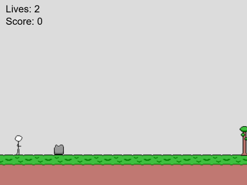

You play as a guy who has one goal: run past as many obstacles as possible. You have three lives and hitting a rock or a tree will result in losing a life. To prevent losing a life, you have to jump over rocks and attack trees.
With the Arduino controller, the three lights on the controller represent the number of lives the player has.
For keyboard: A to attack, SPACE to jump.
For Arduino Controller: Left button to attack, Right button to jump.
Future improvements to this game would involve more obstacles, pickups, a double jump, and different levels.